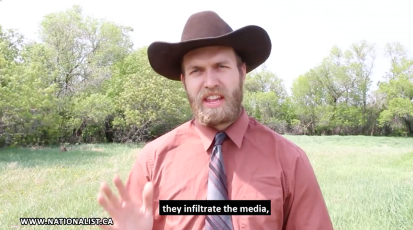
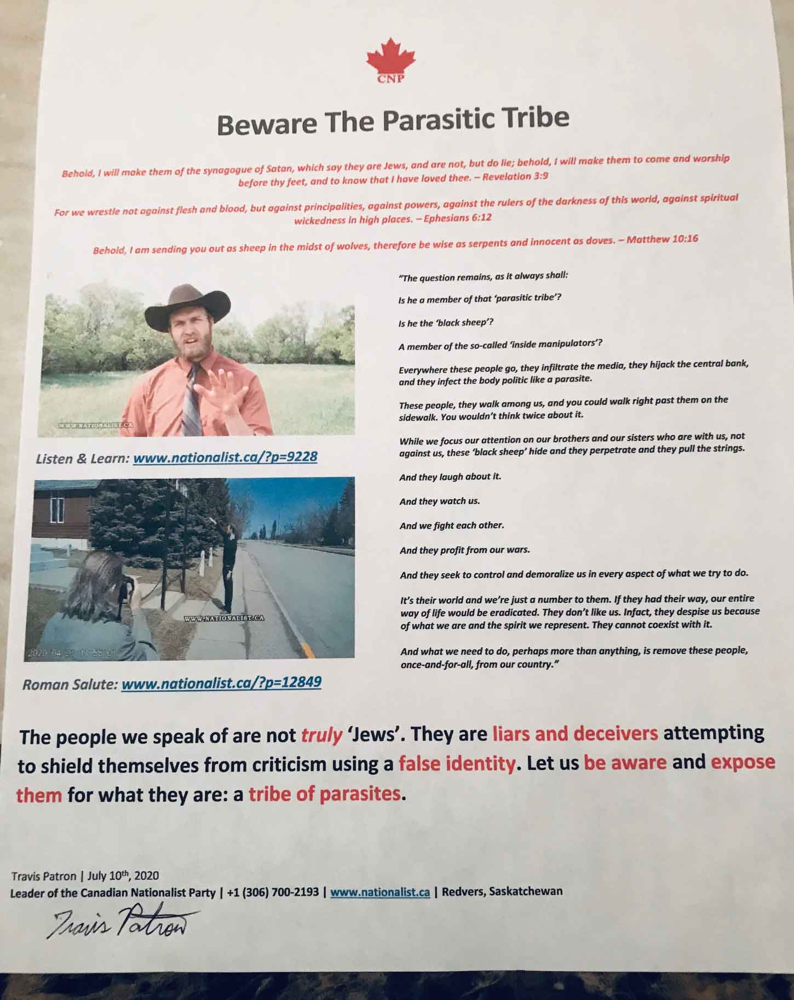

CNP Leader Travis Patron Arrested for 3 Days
February 20th, 2021
Christians For Truth:
TDC_ARTICLE_START
Canadian political leader, Travis Patron, who was arrested on February 15, 2021 allegedly for “hate speech,” has released an official statement about his ordeal. We have transcribed it here for ease of reading. The original statement can be seen below.
TDC_ARTICLE_STOP
Shoutout to Christians For Truth. I'm not religious myself, but I really like their work on all fronts. Definitely not some cucky Zio-Christ Pedo operation.
TDC_ARTICLE_START
Thursday, February 18th, 2021
Fellow citizens,
On Monday, February 15th, I was abducted from my place of residence, pulled away from my loved ones, and subjected to conditions of arbitrary containment. I was told I was being arrested for so-called “hate speech”. Yet, I have received no satisfactory response to my objection that the Provincial Government of Saskatchewan has no right to police my speech. Indeed, they lack the jurisdiction to do so and to proceed in these matters as they did was entirely unlawful and perhaps even criminal.
I was held in custody for over 48 hours at the Carlyle RCMP detachment without any ability to communication outside the administration who was responsible for holding me against my will. I, a federal party leader, was denied by my abductors all requests for a pen and paper to write a message in the name of diplomacy. After I specifically asked for the lights to be kept off in my cell so that I could sleep comfortably, the exact opposite was done, and I was shrouded in bright light with a camera pointed at me the entire time. I was told that if I did not agree to their release conditions, I could be held in custody (without trial) for a years time as well as transferred to other locations. Their release conditions included a ridiculously-broad and unjustified stipulation that I cannot “publish anything, directly or indirectly, online.” Obviously, I did not sign anything.
I made it clear that I did not understand why I was being held in custody and against my will. I made it clear that I do not believe I have done anything wrong. I also demanded to someone the Provincial Government Of Saskatchewan considers a Judge, that I be released from unlawful custody immediately. The Provincial Government of Saskatchewan lacks jurisdiction to proceed on these matters and has no right to police our speech.
Interestingly, some of the Royal Canadian Mounted Police (RCMP) officers seemed to be uncomfortable with this whole affair and uncertain as to what offense I had committed or why I was in custody to begin with. It seems there may yet be a remnant of integrity and critical thought left in the force, but it is currently under the heel of a reckless and unconstitutional administration backed by a media propaganda machine that twists the truth and deceives the public in a malicious way.
The mask has now slipped in Canadian society. We clearly do not live in a “free and democratic society.” Let this be a wake up call to many of you who seem unable to see past the lies of your culture. If you do not take a stance now these conditions will quite likely get worse. Fortunately for us, and by the Grace of God, the ability for the satanic Government of Canada to exercise their will against us is limited because we have been granted a degree of jurisdictional independence. Those who think hiding and complying with each new demand is the answer are in for a very rude wake up call and when that time comes (and it quite likely will) our constituency will not act favorably toward those who have neglected our struggle this entire time. Those who watch these developments with apathy should not be surprised when they are judged harshly.
It is my hope that anyone reading this message how understands how dire this situation is for the sake of our freedom. Although I am rather shell-shocked at this whole ordeal, I ultimately recognize it for what it is: a test. This is a test of willpower, faithfulness, and discipline. If I may say so myself, I think I fared quite well.
As far as I understand, no charges have been lawfully made in the matter. We reserve the right to prosecute to the fullest extent of the law those who falsely claim otherwise.
Please consider this fair notice.
In your service,
Travis Patron
TDC_ARTICLE_STOP
Canadian Nationalist Party Leader Travis Patron
I have to admit, I got into electoral politics back in 2018, and considered the CNP. However, something just seemed not quite right about their leader Travis Patron. Nowadays I don't think he's some fed honeypot, I just think he's kind of a weird guy. Being kind of a weird guy absolutely does not in any way justify this massive Corporate-State oppression he's facing, and I don't want to claim that.
Calling them "not real jews," like, why?
However, my audience should know that Patron, being kind of a weird Pro-White/Libertarian mismatch, has some huge gaps going on in this story. I can't stress enough how obviously unjust his treatment has been, but I'm just not sure I can sign off on "no charges have been lawfully made in the matter."
Patron has been charged with "the wilful promotion of hate," for a video he made called "Beware the Parasitic Tribe." I'm not saying that isn't bullshit, but I mean, it's just not true to say that he hasn't been "lawfully charged." The charges are bullshit, but lawful. I fully support him, but I feel the audience needs to be made clear what's going on.
I'm going to write up a whole article on the "Friends of Simon Wiesenthal Centre" legal battle he's going through. I'm very sympathetic towards Patron, and we shouldn't let catty bullshit about "not good strategy," or "muh optics," distract from the real issue, the oppression of the filthy goy-cattle by Schlomos in the (((Friends of Simon Wiesenthal Centre))).